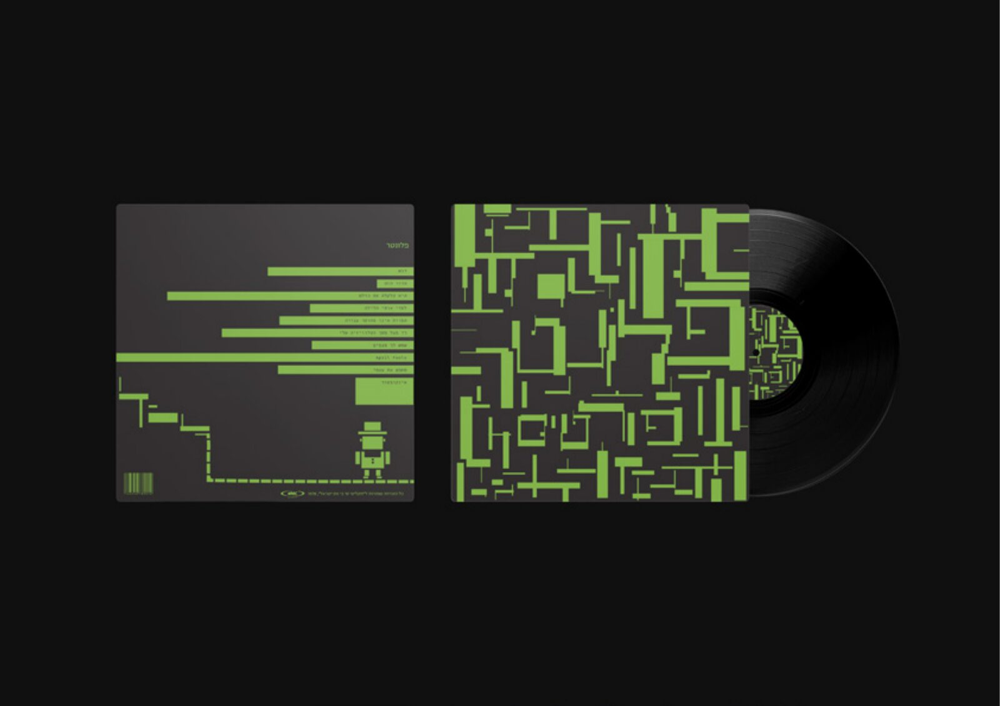
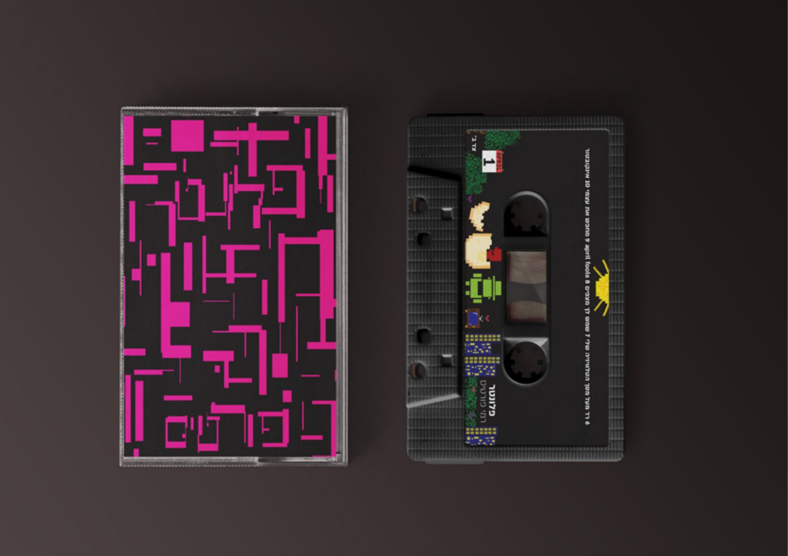
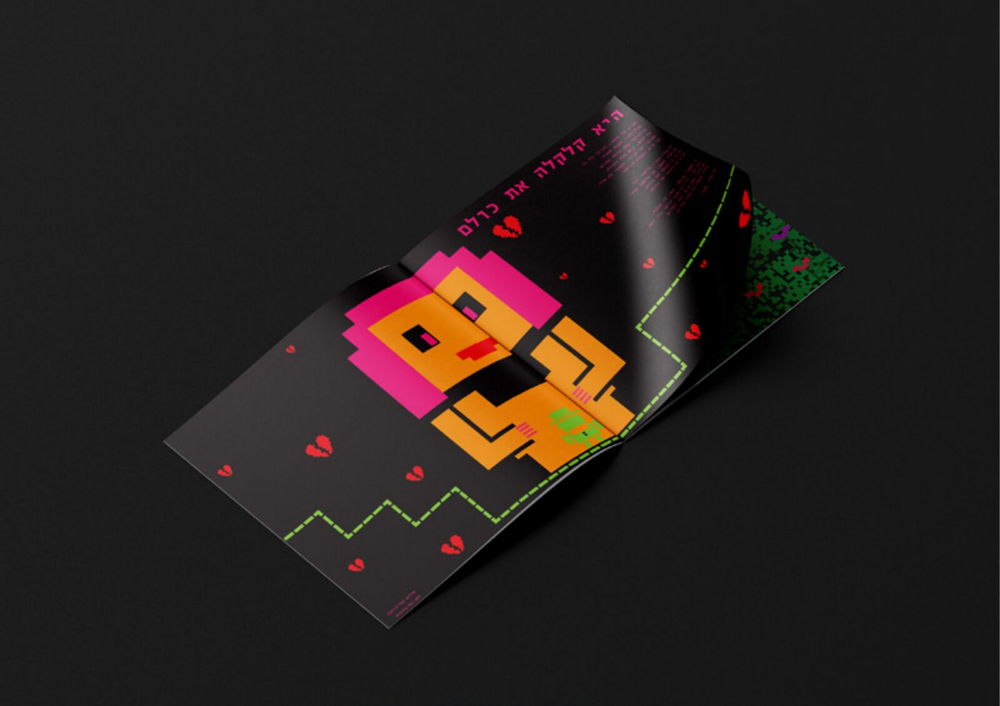

A collaboration with singer and artist Rami Portis to create a new design interpretation of one of his best-known albums. פרויקט במסגרת שיתוף פעולה עם הזמר והיוצר רמי פורטיס, ליצירת פרשנות עיצובית חדשה לאחד מאלבומיו המוכרים.
As part of the project, I was asked to create a new design interpretation for one of Rami Portis's well-known albums — including a redesigned disc, cassette and lyric booklet, alongside a full visual and conceptual direction. במסגרת הפרויקט התבקשנו ליצור פרשנות עיצובית חדשה לאחד מאלבומיו המוכרים של רמי פורטיס — הכוללת עיצוב מחודש לדיסק, קלטת וחוברת שירים, לצד פיתוח קונספט חזותי ורעיוני מלא.
I chose to redesign the album "Plonter" ("Tangle"), driven by a wish to connect the spirit of the album with today's digital reality. The visual language I created is based on pixels, with each song receiving its own visual interpretation. The concept is built around the song "Get Off My TV Screen," expressing humanity's addiction to media and screens — a phenomenon that remains just as relevant today. בחרתי לעצב מחדש את האלבום "פלונטר", מתוך רצון לחבר בין רוח האלבום לבין המציאות הדיגיטלית העכשווית. השפה החזותית שיצרתי מבוססת על פיקסלים, כאשר כל שיר קיבל פרשנות ויזואלית משלו. הקונספט מבוסס על השיר "רד מעל מסך הטלוויזיה שלי", ומבטא את ההתמכרות האנושית למדיה ולמסכים — תופעה שנותרה רלוונטית גם היום.


